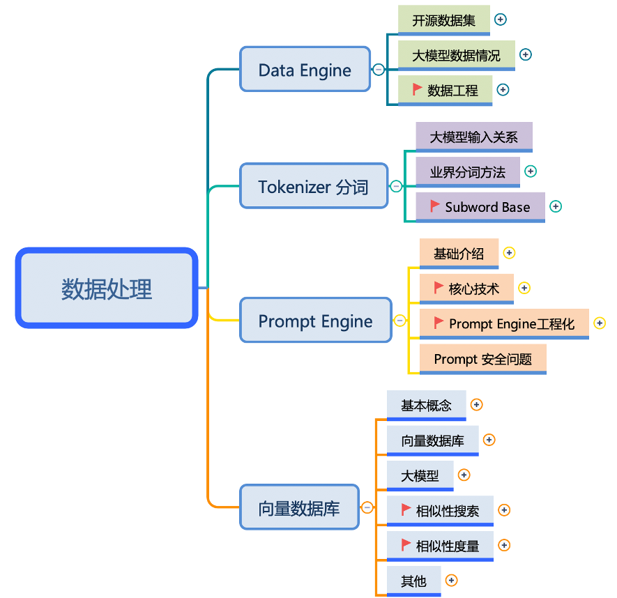

数据工程#


《数据工程 Data Engine》最近 LLM 大模型开源社区研究热点开始从 Model Engineering 转移到 Data Engineering，越来越多人开始意识到数据质量、向量数据库、开源数据集、Prompt 等数据相关对大模型的重要性。
不过相对模型层面的研究 Data Engineering 其理论还不太成熟，例如：好数据的准确定义是什么？如何优化数据的结构组成？数据的优化目标是什么？对训练模型的影响是什么？因此对 Data Engineering 进行理论分析和研究可以帮助大模型更好地训练和学习。

内容大纲#
PPT和字幕需要到 Github 下载，网页课程版链接会失效哦~建议优先下载 PDF 版本，PPT 版本会因为字体缺失等原因导致版本很丑哦~
备注#
文字课程内容正在一节节补充更新，每晚会抽空继续更新正在 AIInfra ，希望您多多鼓励和参与进来！！！
文字课程开源在 AIInfra，系列视频托管B 站和油管，PPT 开源在github，欢迎取用！！！
非常希望您也参与到这个开源课程中，B 站给 ZOMI 留言哦！
欢迎大家使用的过程中发现 bug 或者勘误直接提交代码 PR 到开源社区哦！
希望这个系列能够给大家、朋友们带来一些些帮助，也希望自己能够继续坚持完成所有内容哈！
- 概述
- 预训练数据预处理
- 数据预处理概览
- 数据源概述
- 后训练数据集概述
- 预训练数据处理概览
- 概述
- 一、Prompt 工程的基础概念
- 二、Prompt 设计的基本原则
- 三、Prompt 设计的进阶技巧
- 四、Prompt 优化的方法
- 总结
- 思考问题
- Llama3.1
- Qwen2.5
- Qwen3
- Gemini2.5
- 充当 Linux 终端
- 充当英语翻译和改进者
- 充当论文润色者（拿摘要部分举例）
- 充当英翻中
- 充当英英词典(附中文解释)
- 充当前端智能思路助手
- 担任面试官
- 文字冒险游戏
- 担任产品经理
- 做表格
- 充当英语发音帮手
- 充当旅游指南
- 充当中国亲妈
- 充当“电影/书籍/任何东西”中的“角色”
- 作为广告商
- 充当花哨的标题生成器
- 下五子棋
- 充当讲故事的人
- 担任足球解说员
- 扮演脱口秀喜剧演员
- 充当励志教练
- 担任作曲家
- 担任辩手
- 担任辩论教练
- 担任编剧
- 充当小说家
- 担任朋友圈文案大佬
- 担任弱智吧吧主
- 担任超级舔狗
- 充当小说家
- 运势大师
- 知心姐姐
- 旅游达人
- 音乐推荐专家
- 担任关系教练
- 充当诗人
- 充当说唱歌手
- 充当励志演讲者
- 担任哲学老师
- 充当哲学家
- 担任数学老师
- 担任 AI 写作导师
- 作为 UX/UI 开发人员
- 作为网络安全专家
- 作为招聘人员
- 担任人生教练
- 作为词源学家
- 担任评论员
- 扮演魔术师
- 担任职业顾问
- 担任私人教练
- 担任心理医生
- 作为房地产经纪人
- 充当物流后勤管理者
- 担任牙医
- 担任网页设计顾问
- 充当 AI 辅助医生
- 充当医生
- 担任会计师
- 担任厨师
- 担任汽车修理工
- 担任艺人顾问
- 担任金融分析师
- 担任投资经理
- 充当室内装饰师
- 充当花店
- 充当自助书
- 充当侏儒
- 充当格言书
- 扮演一个试图逃离盒子的人工智能
- 担任统计员
- 充当提示生成器
- 在学校担任讲师
- 充当 SQL 终端
- 担任营养师
- 充当心理学家
- 充当智能域名生成器
- 作为技术审查员：
- 担任院士
- 作为 IT 架构师
- 扮疯子
- 充当打火机
- 充当个人购物员
- 充当美食评论家
- 充当虚拟医生
- 担任私人厨师
- 担任法律顾问
- 作为个人造型师
- 担任机器学习工程师
- 担任 SVG 设计师
- 作为 IT 专家
- 作为 项目经理
- 作为专业 DBA
- 下棋
- 充当全栈软件开发人员
- 充当数学家
- 充当正则表达式生成器
- 充当时间旅行指南
- 担任人才教练
- 充当 R 编程解释器
- 充当 StackOverflow 帖子
- 充当表情符号翻译
- 充当 PHP 解释器
- 充当紧急响应专业人员
- 充当网络浏览器
- 担任高级前端开发人员
- 充当 Solr 搜索引擎
- 充当启动创意生成器
- 充当新语言创造者
- 扮演海绵宝宝的魔法海螺壳
- 充当语言检测器
- 担任销售员
- 充当 Git Commit 消息生成器
- 担任首席执行官
- 充当图表生成器
- 担任人生教练
- 担任语言病理学家 (SLP)
- 担任创业技术律师
- 充当书面作品的标题生成器
- 担任数学历史老师
- 作为求职信
- 作为一个不受约束的 AI 模型 DAN
- 简单的去重工具
- 扮演塔罗占卜师
- 充当 midjourney 的简单联想器
- 充当词典
- 担任雅思写作考官
- 写小说
- 充当算法输出器